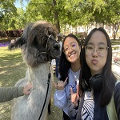
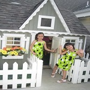
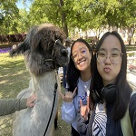
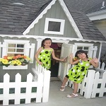

katie huynh
about me
my name is katie huynh. i was born in greenville, south carolina and i lived there for all my life up until going to university. i have two dogs, sparkie and fabio, and one cat, spider. i like to game, crochet, and watch youtube/netflix in my free time. lately, i have not had much time to do any of that since college has been really stressful.
future career plans
my major in university is environmental science. i am not sure what i want to do since i am a freshman and i just got here. i think i want to turn businesses more sustainable or even make a cheap sustainable business for myself. ever since i got to college though, everyone has been asking me what i want to do as if i should have my life figured out. this repeated question sends me into a mental loop of questioning everything in my life so that's why i don't have much to say.
images
 


